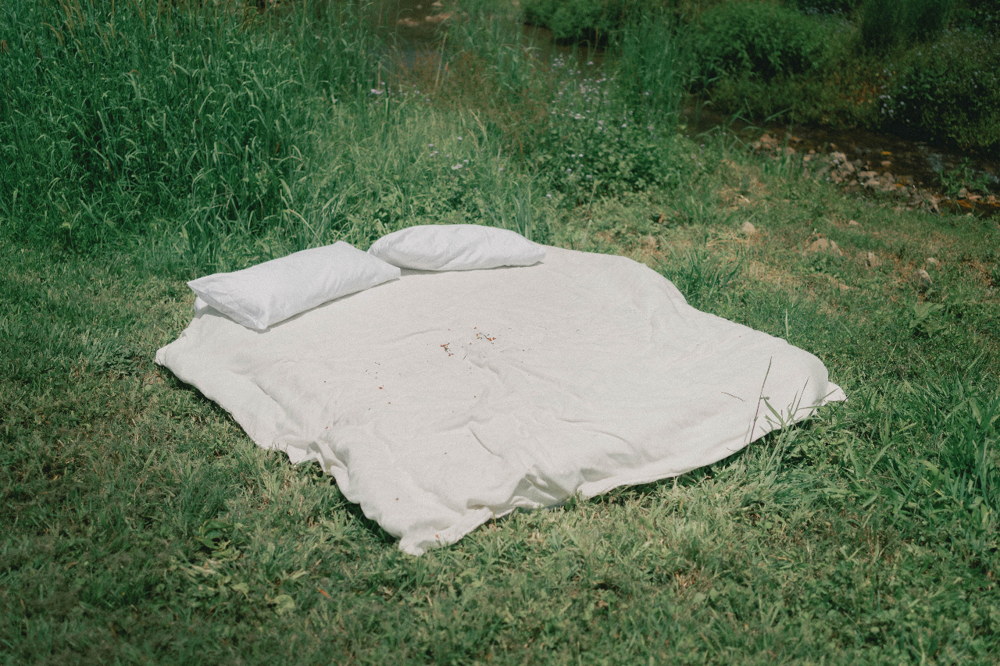
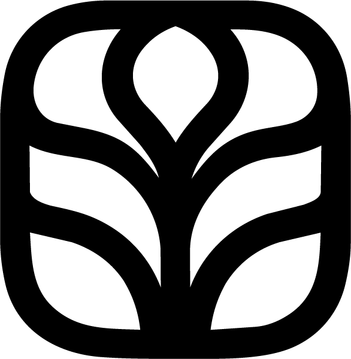
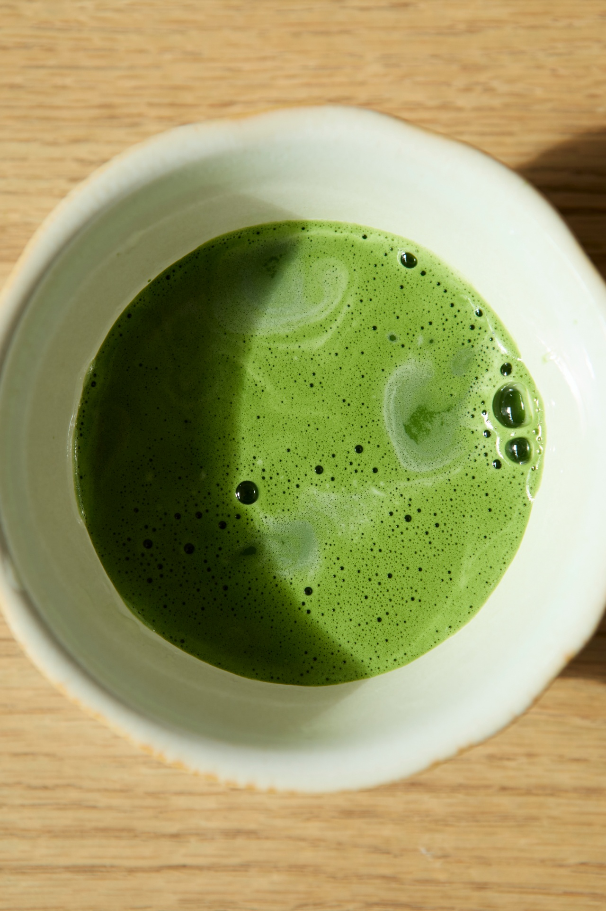
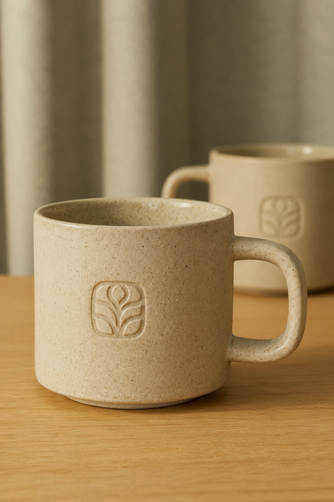
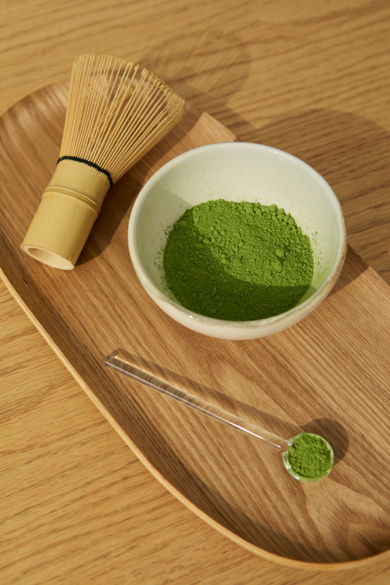
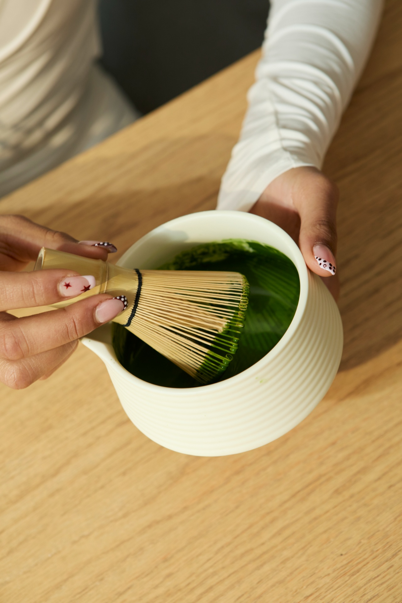
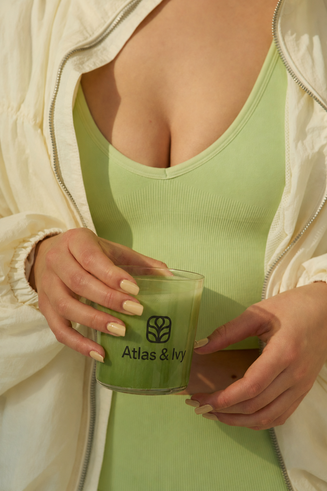
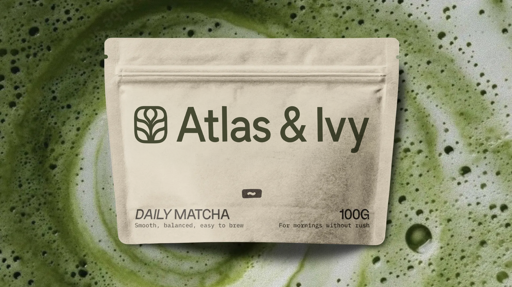
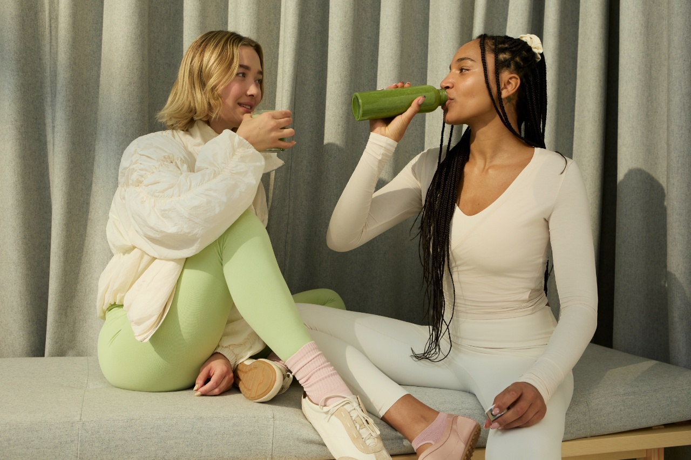

Making a five minute ritual worth the five minutes.
Atlas & Ivy sells ceremonial grade matcha to people who want a gentler morning than coffee gives them. The product was already good. What sat around it looked like every other green pouch on the shelf, so none of the care in the cup reached the customer before they bought it.
We built the identity out of the plant. The mark is a sprout drawn as a symmetrical botanical form, and it sets the rule the rest of the system follows. Shapes grow out from a center, and nothing shouts.



A mark that grew out of the leaf
The symbol reads as a sprout first. Look a second longer and the fanned leaves start behaving like the tines of a whisk. It holds up at 24 pixels on a phone and it still has something left to give blown up on a shop window.
Ivy supplies the curves and Atlas supplies the frame. The squircle keeps the drawing steady, which lets the botanical work inside stay soft without going flimsy.
Color taken from the cup
Every color in the system came off a photograph of the actual product. The green is the foam on a properly whisked bowl rather than a green somebody picked out of a swatch book. The oat and stone behind it are the ceramics and linen from the studio shoot.
That keeps the packaging honest on a shelf. What you see on the tin is close to what ends up in the bowl.




Good matcha is a small argument for slowing down.
Packaging built for the counter
Matcha gets used every day, so the pouch has to earn a spot on the counter instead of hiding in a cupboard. The lockup sits large in the upper field with nothing competing beside it, and the whole face prints in one deep green.
The bottom band carries what you need at arm's length: the blend name, a plain line about how it drinks, and the weight. "For mornings without rush" sits opposite, small enough that you only catch it on the second look.


Built to grow
into a range
The mark, the palette and the type were drawn to survive additions. A second blend or a seasonal run slots in without a redesign, because the structure carries the recognition and the color only ever plays a supporting part.